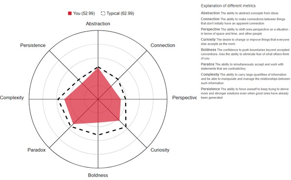

Nathan Crabb
<
Student ID s3917983
Student Email s3917983@student.rmit.edu.au
Github Pages repository URL https://nathancrabb.github.io/nathancrabb/
Github Public repository URL https://github.com/nathancrabb/nathancrabb/
<
home
Personal Info
Interests
Ideal Job
Personal Profile
Project Idea
3 tests that show my Personal Profile
16 personalities test
These are the results of my Myers-Briggs test done at 16personalities.com
Type “The Mediator” (INFP-A)
Traits
Introverted - 52%
Intuitive - 58%
Feeling - 54%
Prospecting - 65%
Assertive - 63%
Role Diplomat
Strategy Confident Individualism
test my creativity

learning styles
Conclusions Well it looks like I’m a visual learner who follows my own path and need to improve on my creativity. These tests don’t feel like they have much depth, although the 16 personalities test seems to be spot on and there is the ability to take on more tests. I have never taken a test such as this before and they seem to provide some insight as to what kind of person I am and which ways allow me to learn more efficiently.